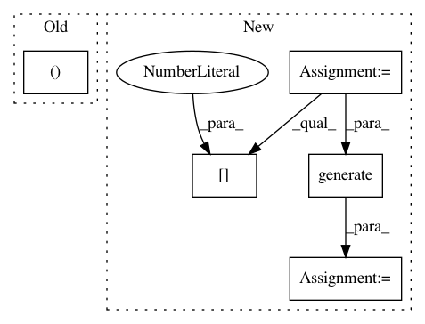

78604bdd9729e62b290823ad64e0d8de28da477a,src/attackers/fast_gradient_unittest.py,TestFastGradientMethod,test_mnist,#TestFastGradientMethod#,14
Before Change
self.assertFalse((X_train == X_train_adv).all())
self.assertFalse((X_test == X_test_adv).all())
_, train_y_pred = get_label_conf(model.predict(X_train_adv))
_, test_y_pred = get_label_conf(model.predict(X_test_adv))
self.assertFalse(np.all(Y_train == train_y_pred))
After Change
print("\naccuracy on adversarial test examples: %.2f%%" % (scores[1] * 100))
// test minimal perturbations
attack_params = {"verbose": 0,
"clip_min": 0.,
"clip_max": 1.,
"minimal": True,
"eps_step": .1,
"eps_max": 1.}
X_train_adv_min = attack.generate(X_train, **attack_params)
X_test_adv_min = attack.generate(X_test, **attack_params)
self.assertFalse((X_train_adv_min == X_train_adv).all())
self.assertFalse((X_test_adv_min == X_test_adv).all())
self.assertFalse((X_train == X_train_adv_min).all())
self.assertFalse((X_test == X_test_adv_min).all())
train_y_pred = get_labels_np_array(model.predict(X_train_adv_min))
test_y_pred = get_labels_np_array(model.predict(X_test_adv_min))
self.assertFalse((Y_train == train_y_pred).all())
self.assertFalse((Y_test == test_y_pred).all())
scores = model.evaluate(X_train_adv_min, Y_train)
print("\naccuracy on adversarial train examples: %.2f%%" % (scores[1] * 100))
scores = model.evaluate(X_test_adv_min, Y_test)
print("\naccuracy on adversarial test examples: %.2f%%" % (scores[1] * 100))
if __name__ == "__main__":
In pattern: SUPERPATTERN
Frequency: 3
Non-data size: 5
Instances
Project Name: IBM/adversarial-robustness-toolbox
Commit Name: 78604bdd9729e62b290823ad64e0d8de28da477a
Time: 2017-06-08
Author: valentina.zantedeschi@ibm.com
File Name: src/attackers/fast_gradient_unittest.py
Class Name: TestFastGradientMethod
Method Name: test_mnist
Project Name: tensorflow/cleverhans
Commit Name: f9dd2e3636db61ee1b4d32ee4f494fd9e71adc12
Time: 2017-03-29
Author: ngp5056@cse.psu.edu
File Name: cleverhans/attacks.py
Class Name: Attack
Method Name: generate_np
Project Name: tensorflow/cleverhans
Commit Name: f9dd2e3636db61ee1b4d32ee4f494fd9e71adc12
Time: 2017-03-29
Author: ngp5056@cse.psu.edu
File Name: cleverhans/attacks.py
Class Name: FastGradientMethod
Method Name: generate_np